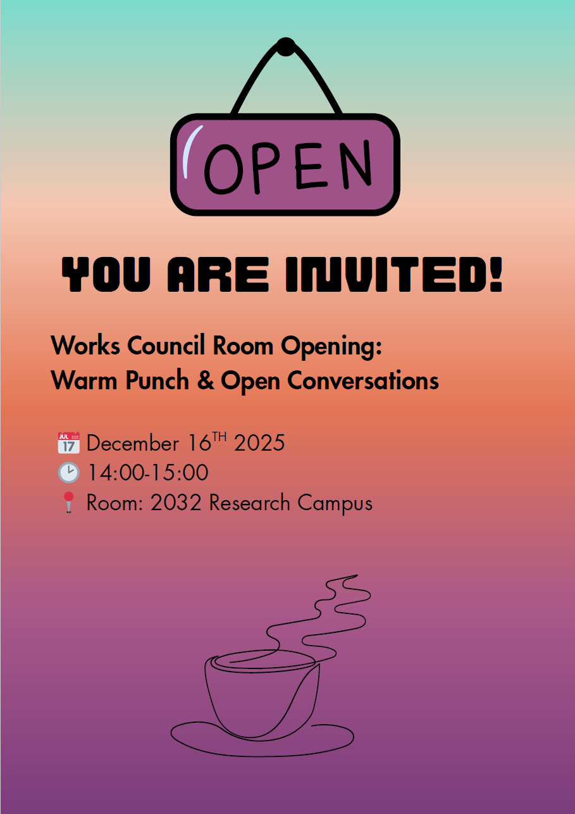

Works Council Room Opening 🎉
Join us for the opening of the Works Council office - Research Campus (Room 2032)!
Hi IT-U Team!
Join us for the opening of the Works Council office - Research Campus (Room 2032)!
Drop in between 14:00 and 15:00 for warm (non alcoholic) punch, snacks, and conversation.
During your visit, you can:
- Get to know your elected representatives
- Learn about our working office hours and how to meet with us in the future
- Explore the office - your safe and confidential place to discuss anything work-related
- Ask questions, raise concerns, or just chat to understand what the Works Council can do for you
This type of event is taking place from now on once a month in case you miss this one, we want to be able to give you a chance to come and have open conversations and meet others.
We look forward to meeting you and welcoming you into your safe space! 😊
Theo, Julia, Michaela, Matt and Deler